第一章 丰富的图形世界 （高效培优单元测试·提升卷）
（高效培优单元测试·提升卷）
（考试时间：120分钟 试卷满分：120分）
一、选择题（本大题共10小题，每小题3分，共30分）
1．用一个平面去截一个五棱柱，截面不可能是（ ）
A．三角形 B．长方形 C．七边形 D．八边形
【答案】D
【分析】本题主要考查几何体的特征，熟练掌握五棱柱的特征是解题的关键；因此此题可根据五棱柱的特征进行求解．
【详解】解：用一个平面去截一个五棱柱，截面可以经过三个面，四个面，五个面，六个面或七个面，所以可能得到的形状为三角形，四边形，七边形，五边形等，但不可能得到八边形；
故选D．
2．与图中实物图类似的立体图形按从左至右的顺序依次是（ ）
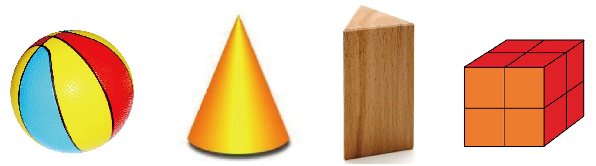
A．圆锥、三棱柱、球、正方体 B．球、圆锥、三棱柱、正方体
C．三棱柱、球、圆锥、正方体 D．球、三棱柱、正方体、圆锥
【答案】B
【分析】根据常见实物与几何体的关系解答即可．
【详解】与图中实物图相类似的立体图形按从左至右的顺序依次是：球、圆锥、三棱柱、正方体．
故选：B．
【点睛】本题考查了立体图形，解题的关键是熟练的掌握立体图形的相关知识．
3．中国是瓷器的故乡．如图是南宋青白瓷斗笠碗，以青白瓷为主题而设计，官窑制品．从上面观察这个图形，得到的平面图形是（ ）
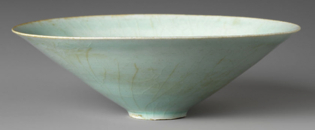
A．
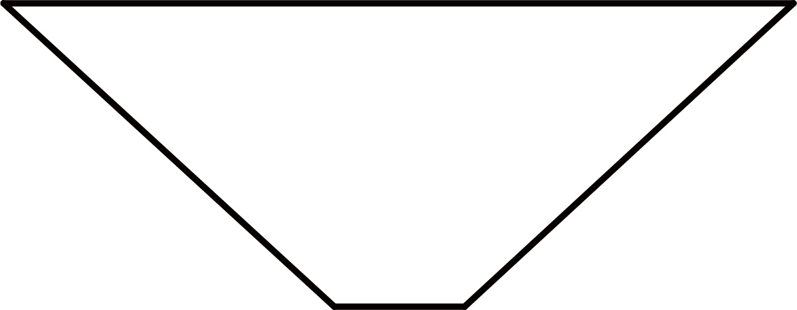
B．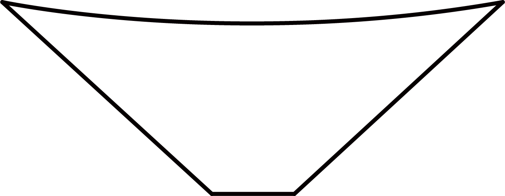
C．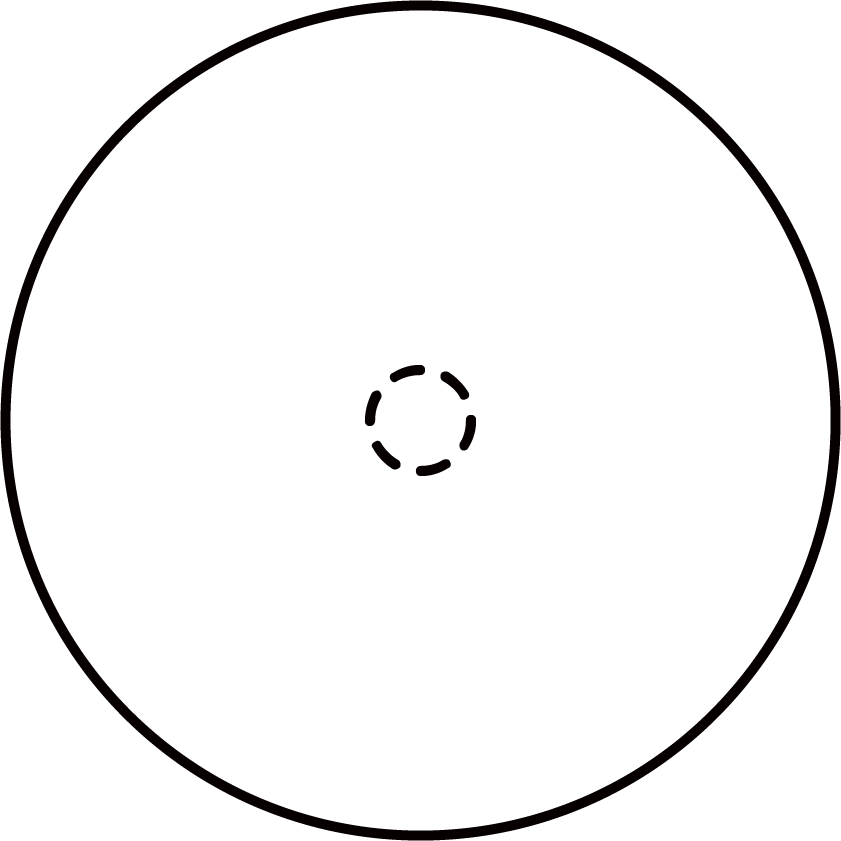
D．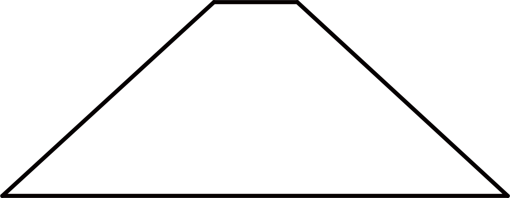
【答案】C
【分析】本题考查了从不同方向看物体．根据从上面观察这个图形，得到平面图形即可，看得见用实线，看不见用虚线．
【详解】解：从上面观察这个图形，得到的平面图形是：
故选： ．
．
4．下列图形，是正方体展开图的是（ ）
A．
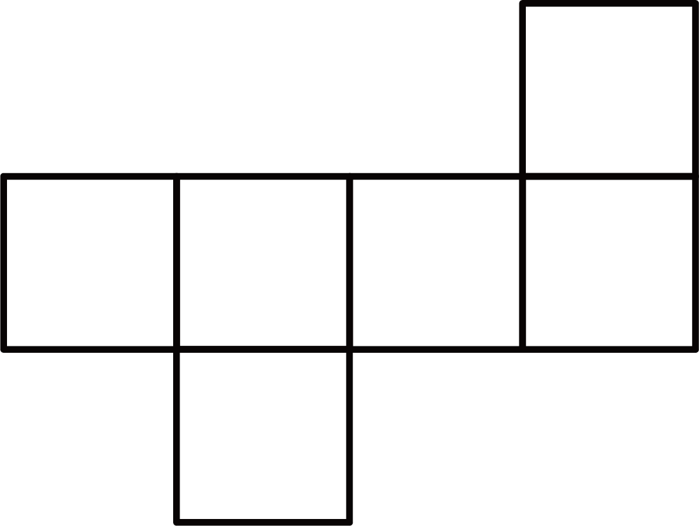
B．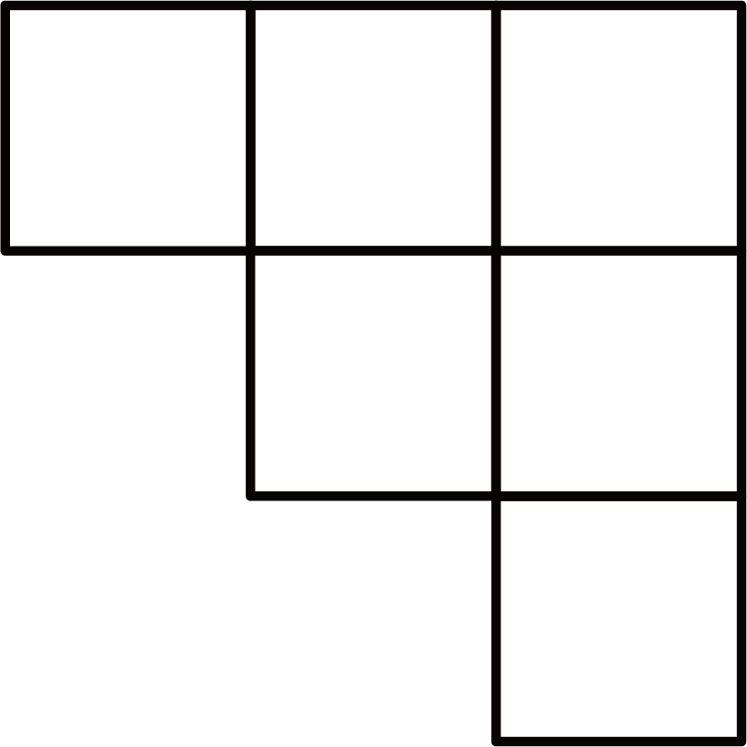
C．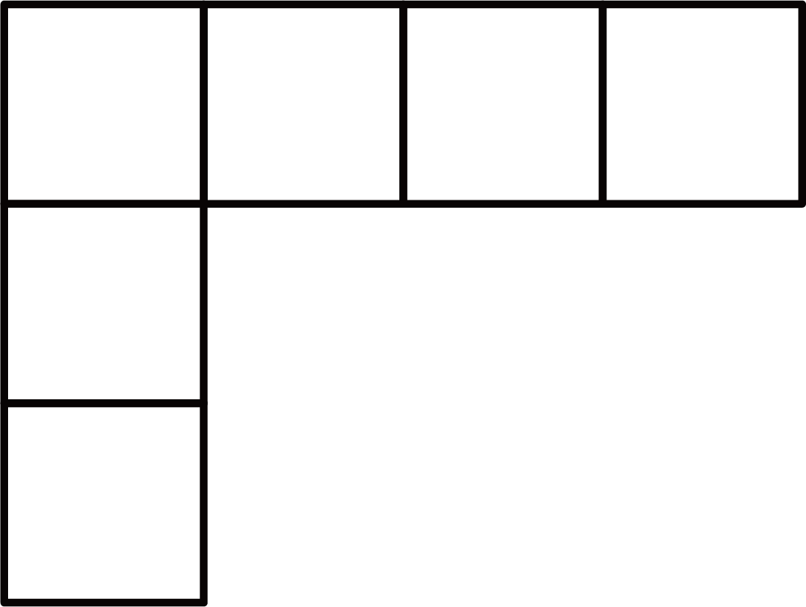
D．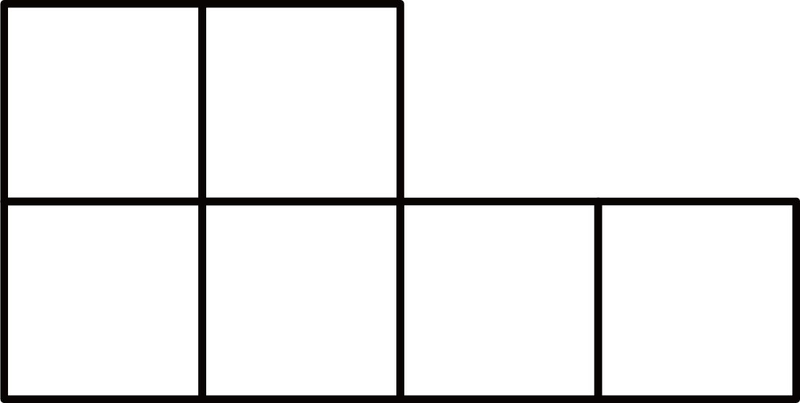
【答案】A
【分析】本题考查了正方体的展开图，熟记正方体的11种展开图是解题关键，根据正方体的11种展开图分析求解即可．
【详解】解：A、
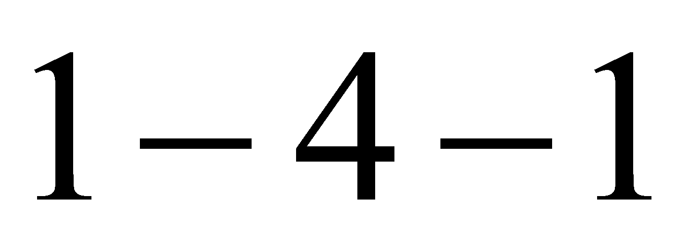
型是正方体展开图，故选项符合题意；B、有田字格，不是正方体展开图，故选项不符合题意；
C、L型不是正方体展开图，故选项不符合题意；
D、有田字格，不是正方体展开图，故选项不符合题意．
故选：A．
5．如图，传统竹编工艺有着悠久的历史和文化内涵，凝结着中华民族的智慧结晶．如图，将给定的图形绕虚线旋转一周得到的几何体与下列竹工艺品的形状最为近似的是（ ）
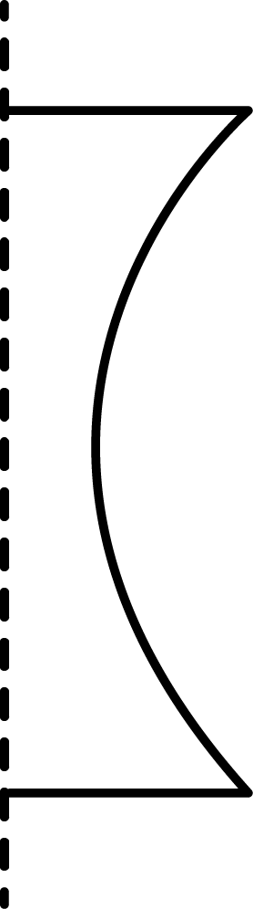
A． B．
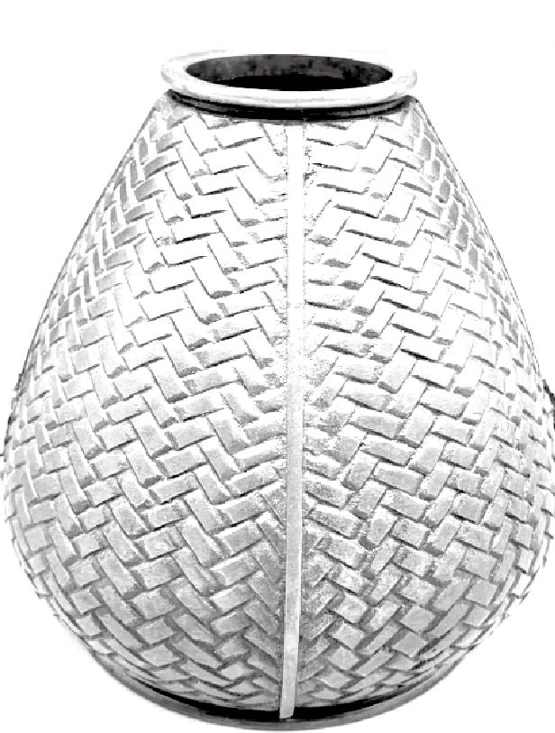
C．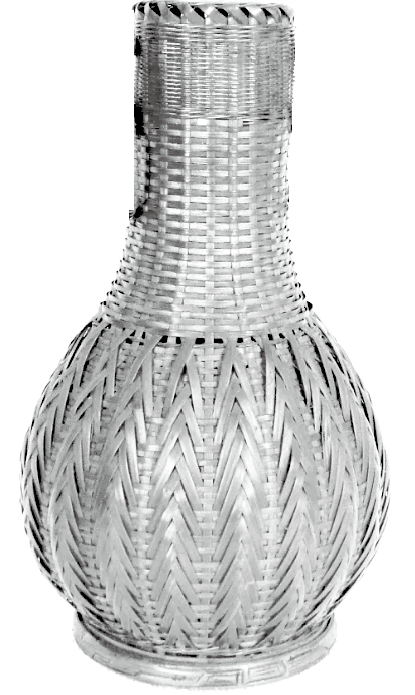
D．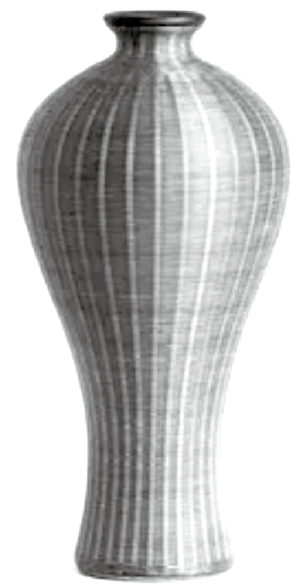
【答案】A
【分析】本题考查了面动成体的过程，熟练掌握面动成体是解题的关键；通过丰富的空间想象力类比选项中各花瓶的外表即可得出答案．
【详解】
解：将给定的图形绕虚线旋转一周得到的几何体与下列竹工艺品的形状最为近似的是
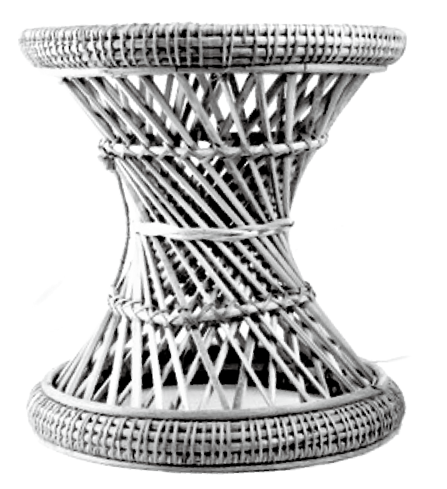
，故选：A
6．下列说法
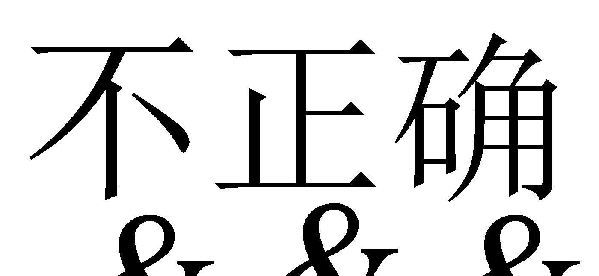
的是（ ）A．五棱柱有10个顶点
B．棱柱侧面的形状可能是一个三角形
C．“天空划过一道流星”能说明“点动成线”
D．圆锥由两个面围成，这两个面中，一个面是平的，一个面是曲的
【答案】B
【分析】本题考查了棱柱、点动成线、圆锥等知识．对知识的熟练掌握是解题的关键．
根据棱柱、点动成线、圆锥等知识分别进行判断即可．
【详解】解：五棱柱有10个顶点，A正确，故不符合要求；
棱柱侧面的形状是平行四边形，不可能是一个三角形，B错误，故符合要求；
“天空划过一道流星”能说明“点动成线”， C正确，故不符合要求；
圆锥由两个面围成，这两个面中，一个面是平的，一个面是曲的，D正确，故不符合要求；
故选：B．
7．下列各图形中，能折叠成棱柱的有（ ）个
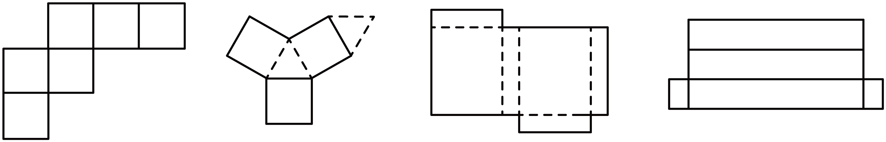
A．1 B．2 C．3 D．4
【答案】B
【分析】本题考查了展开图折叠成几何体，利用展开图的形状是解题关键，注意几何体的上底面与下底面相对．
根据棱柱展开图的形状，可得答案．
【详解】解：第一个图无法可折叠成棱柱；第二图可折叠成三棱柱；第三个图可折叠成长方体，即四棱柱；第四个图无法折叠成棱柱；所以能折叠成棱柱的有2个．
故选：B
8．已知一个直棱柱共有12个顶点，它的底面边长都是 ，侧棱长都是
，侧棱长都是 ，则它的侧面积是（ ）
，则它的侧面积是（ ）
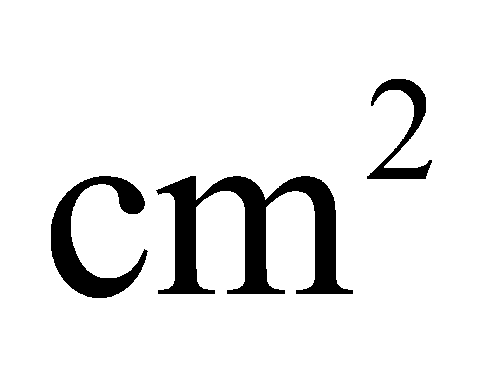
．A．120 B．100 C．80 D．20
【答案】A
【分析】根据题意，判断这个直棱柱是六棱柱，利用棱柱侧面积公式即可解答．本题考查了正棱柱侧面积的计算，熟记侧面积计算公式是解答此题的关键．
【详解】解：∵一个直棱柱共有12个顶点，
∴这个直棱柱是六棱柱，
∵它的底面边长都是，侧棱长都是，
∴它的侧面积是
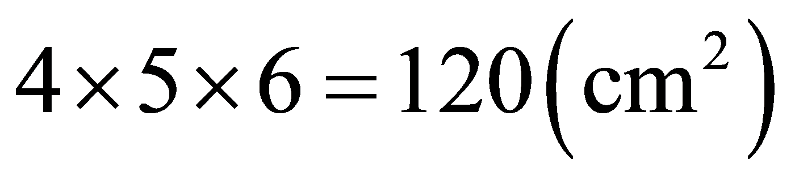
，故选：A．
9．如图是一个正方体纸盒，下面哪一个可能是它的表面展开图（ ）
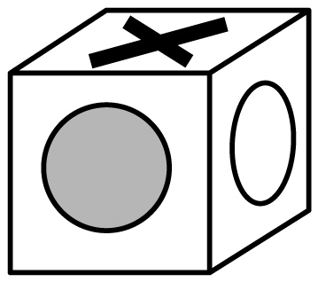
A．
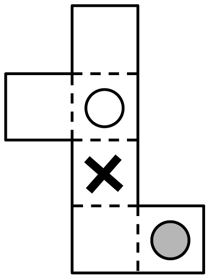
B．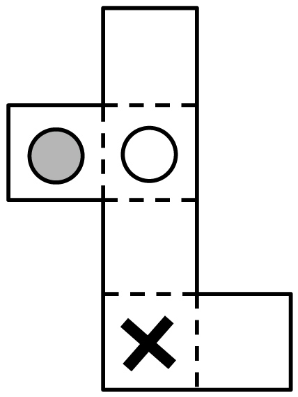
C．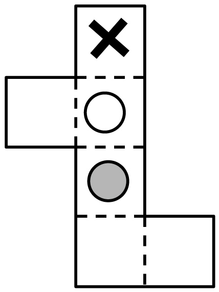
D．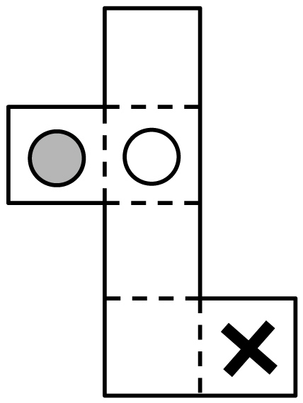
【答案】A
【分析】根据图中符号所处的位置关系作答.
【详解】三个图形相邻，而选项
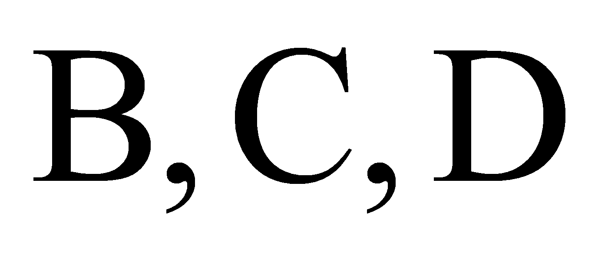
，都出现了两个图形相对，故选：A.
【点睛】此题主要考查了含图案的正方体的展开图，动手折叠一下，有助于空间想象能力的培养.
10．用相同尺寸的长方形纸板制作一个无盖的长方体纸盒．先在纸板上画出其表面展开图（需剪掉阴影部分），两种裁剪方案如图1和图2所示，图中A，B，C均为正方形：
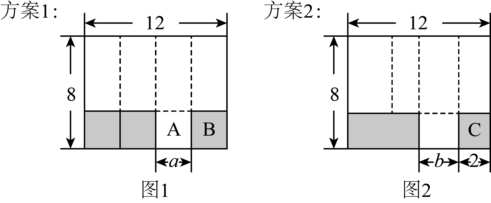
下列说法正确的是（ ）
A．方案 1中的  B．方案2中的
B．方案2中的
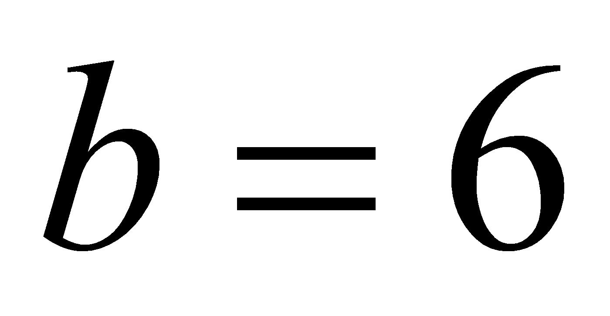
C．方案1所得的长方体纸盒的容积小于方案 2所得的长方体纸盒的容积 D．方案1所得的长方体纸盒的底面积与方案2所得的长方体纸盒的底面积相同
【答案】C
【分析】本题考查图形的展开与折叠，考查学生的运算能力、推理能力、空间观念．分别求出a和b的值，方案1和方案2的容积即可得到答案．
【详解】解：方案1：
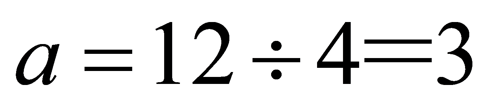
，故A选项错误，所折成的无盖长方体的底面积为 ．
．
容积为
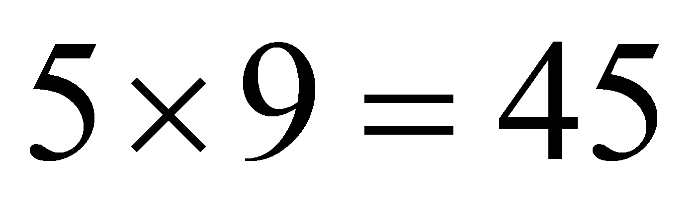
．方案2：
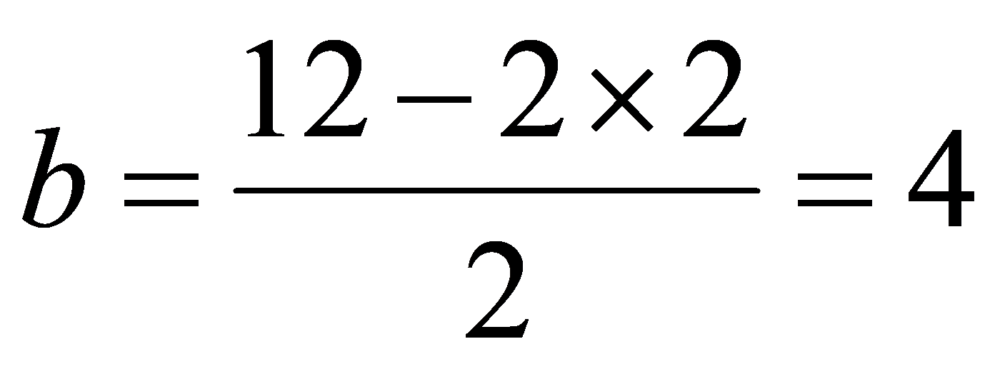
，故B选项错误，所折成的无盖长方体的底面积为
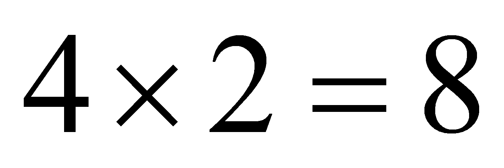
．容积为
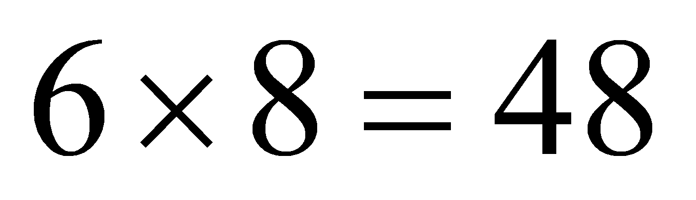
．∴方案1所得的长方体纸盒的容积小于方案 2所得的长方体纸盒的容积，
故选：C．
二、填空题（本大题共6小题，每小题3分，共18分）
11．一个正方体的表面展开图如图所示，把它折成正方体后，与“间”字相对的字是 ．
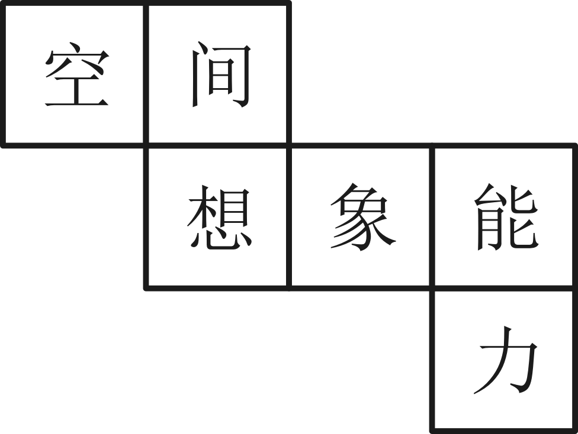
【答案】力
【分析】本题考查了正方体相对两个面上的文字，熟练掌握根据正方体的表面展开图找相对面的方法是解题的关键．
【详解】解：根据正方体的表面展开图找相对面的方法：一线隔一个，“Z”字两端是对面，即可解答．
解：由题意得：空与象是相对面，想与能是相对面，
∴与“间”字相对的字是力，
故答案为：力．
12．国扇文化有深厚的文化底蕴，历来中国有“制扇王国”之称．打开折扇时，随着扇骨的移动形成一个扇面，这种现象可以用数学原理解释为 ．
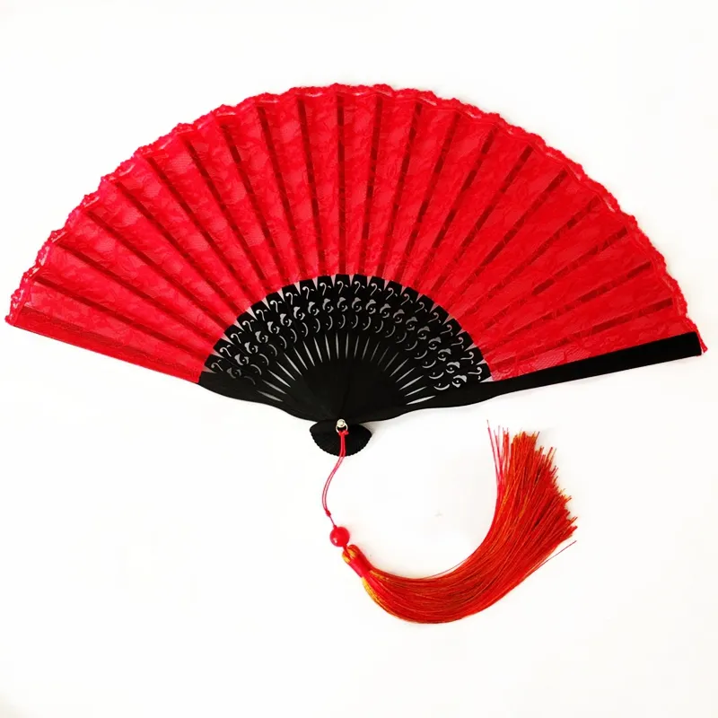
【答案】线动成面
【分析】本题考查了线、面的关系，根据题意，结合线动成面的数学原理：某一条线在运动过程中留下的运动轨迹会组成一个平面图形，这个平面图形就是一个面，即可得出答案．熟练掌握线动成面的数学原理是解本题的关键．
【详解】解：根据题意，这种现象可以用数学原理解释为：线动成面．
故答案为：线动成面．
13．小强有6个大小一样的正方形，他已用5个正方形拼成了如图所示的图形（阴影部分），要想使拼接的图形能够折叠成一个封闭的正方体盒子，他的第6个正方形可放在 的位置（填写序号）．
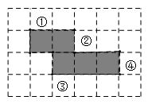
【答案】③
【分析】根据正方体的表面展开图分析即可求解．
【详解】解：如图所示，
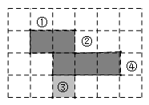
故答案为：③．
【点睛】本题考查了正方体的表面展开图，理正方体的表面展开图的模型是解题的关键．正方体的表面展开图用‘口诀’：一线不过四，田凹应弃之，相间、Z端是对面，间二、拐角邻面知．
14．一个几何体由若干个大小相同的小立方块搭成，从左面和上面看到的这个几何体的形状图分别如图所示．根据所给的两个形状图判断搭成该几何体，最多需要a个小立方块，最少需要b个小立方块，那么 ．
．
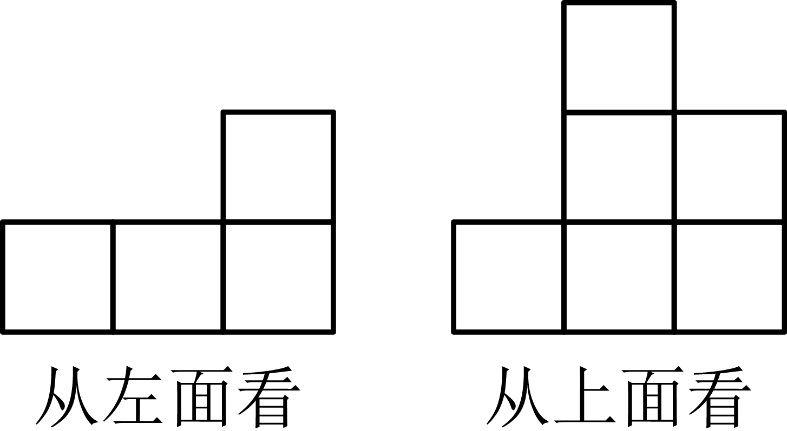
【答案】15
【分析】本题考查从不同方向看几何体．利用从上看的图形，在从上面看到的图上写出最多以及最少时小正方体的个数，可得结论．
【详解】解：如图：从上面看最少的情况(不唯一)，
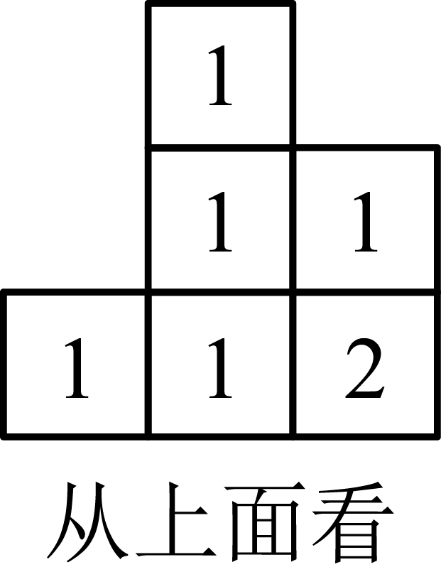
最少有：
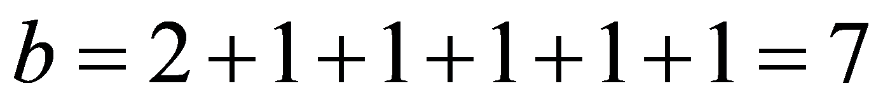
（个），如图：从上面看最多的情况，
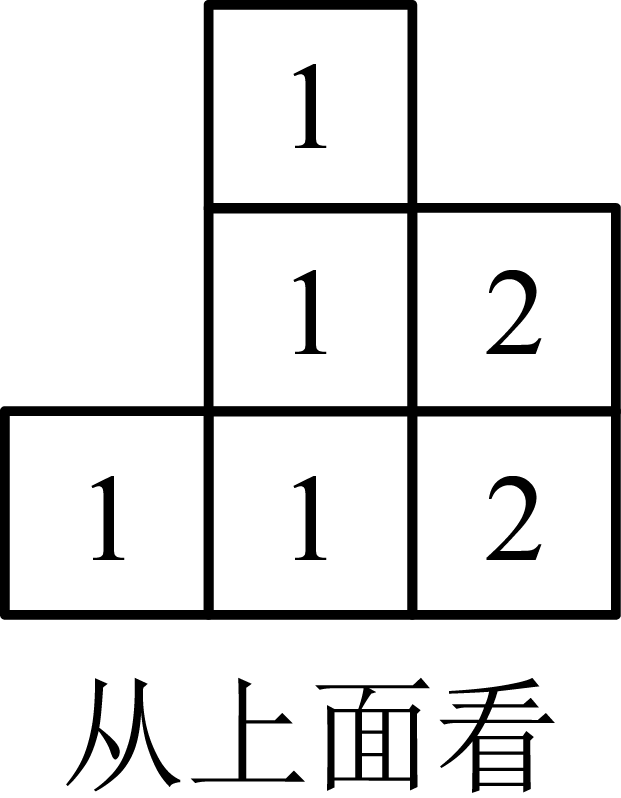
最多有：
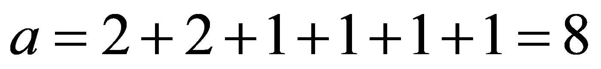
（个），故：
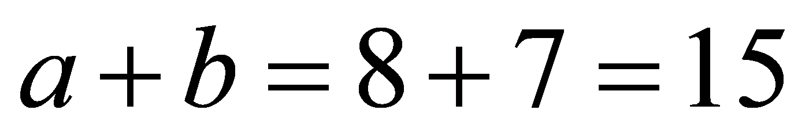
，故答案为：15．
15．如图，把一个高9dm的圆柱的底面分成许多相等的扇形，然后把圆柱切开，拼成一个与它等底等高的近似长方体，它的表面积比圆柱体的表面积增加了
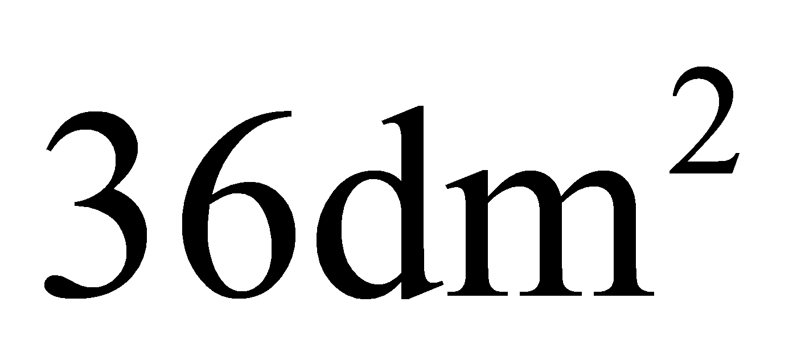
．原来这个圆柱的体积是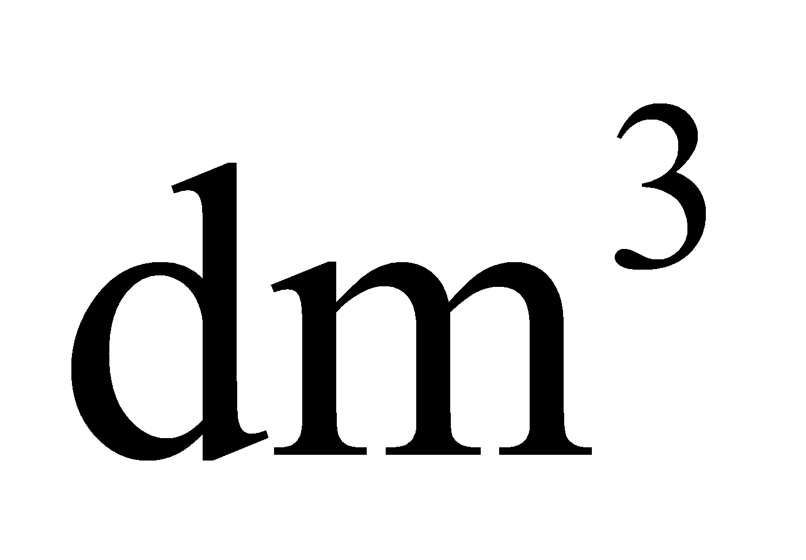
．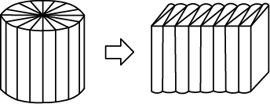
【答案】
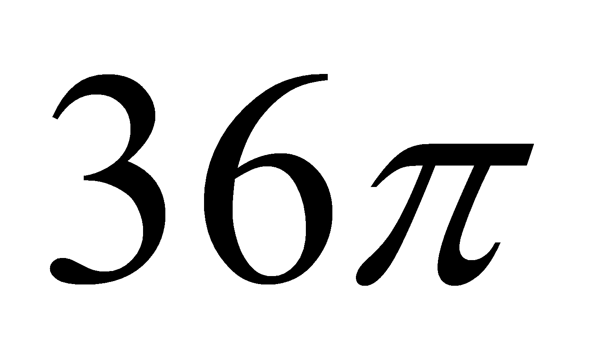
【分析】增加的面积等于底面半径乘以高，再乘以2，由此可以计算出圆柱的底面半径，进而可以算出圆柱的体积．
【详解】解：圆柱的底面半径为：36÷2÷9=2（分米），
故圆柱的体积为：
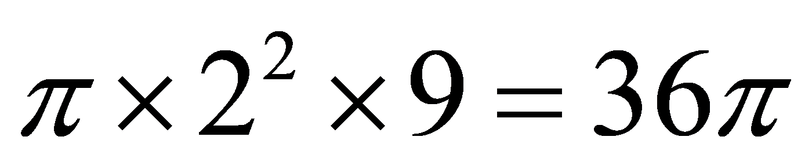
（立方分米），故答案：．
【点睛】本题考查圆柱的体积，长方形的面积，长方体的表面积，掌握圆周的体积公式是解决本题的关键．
16．一个长方形 边长，
边长， ，
， 绕其中一边旋转一周得到的立体图形的体积是
绕其中一边旋转一周得到的立体图形的体积是  （结果保留
（结果保留
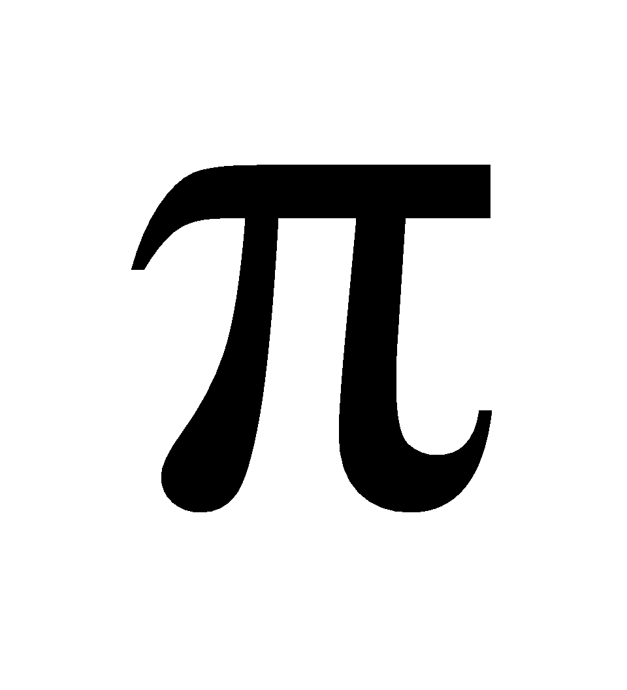
）．【答案】
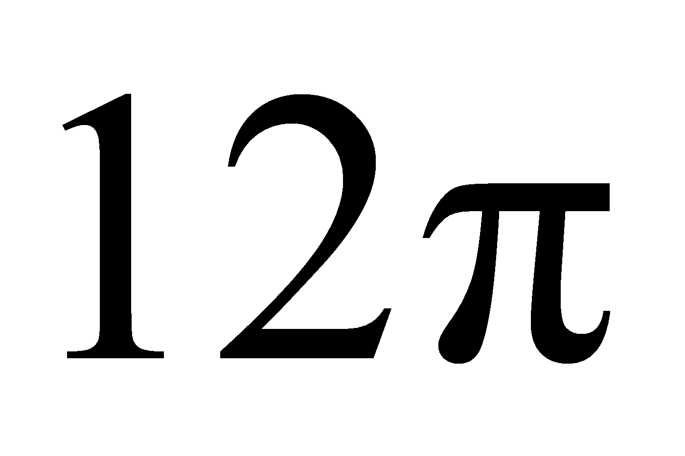
或【分析】本题考查点、线、面、体，圆柱的定义，圆柱的体积，一个长方形绕着它的一边旋转一周，根据面动成体的原理和圆柱的体积即可求解．
【详解】解：一个长方形绕一边旋转一周得到的立体图形是圆柱．
分别以 ，
， 为轴旋转时得到圆柱的体积或
为轴旋转时得到圆柱的体积或
故答案为或．
三、解答题（第17，18，19，20题，每题6分；第21，22，23题，每题8分；第24，25题，每题12分；共9小题，共72分）
17．一个几何体由若干个大小相同的小立方块搭成，从上面看到的几何体的形状图如图所示，其中小正方形中的数字表示在该位置的小立方块的个数．请画出从正面和从左面看到的这个几何体的形状图．
【答案】见解析
【分析】根据从正面看，从左面看的画图要求，画图解答即可．
本题考查了几何体的从不同方向看，熟练掌握几何体的画法是解题的关键．
【详解】解：根据图中所示的小正方体的个数可得：
18．如图，是一个几何体的表面展开图的一部分．
(1)该几何体是______，请补全图形，关键线段要标上数据。
(2)依据图中数据求该几何体的体积和表面积；
【答案】(1)长方体
(2)体积为 立方米；表面积为平方米
立方米；表面积为平方米
【分析】本题考查了几何体的展开图，求几何体的体积、表面积；
（1）根据展开图得出几何体是长方体，根据题意补全图形，即可求解；
（2）根据展开图分别求得体积与表面积即可求解．
【详解】（1）解：如图所示，该几何体是长方体
（2）解：该几何体的体积为立方米；
表面积为平方米．
19．指出如图所示的立体图形中的柱体、锥体、球．
(1)如果按“柱、锥、球”来分，柱体有 ，锥体有 ，球有 ；
(2)如果按“有无曲面”来分，有曲面的有 ，无曲面的有 ．
【答案】(1)（ ），（
），（ ），（
），（ ）；（
）；（ ）（
）（ ）；（
）；（ ）；
）；
(2)（），（），（）；（），（），（）．
【分析】（）根据立体图形的分类即可求解；
（）根据立体图形的分类即可求解；
本题考查了立体图形，熟练掌握立体图形的特点是解题的关键．
【详解】（1）按“柱、锥、球”来分，柱体有（），（），（），锥体有（）（），球有（），
故答案为：（），（），（）；（）（）；（）；
（2）按“有无曲面”来分，有曲面的有（），（），（），无曲面的有（），（），（），
故答案为：（），（），（）；（），（），（）．
20．小军和小红分别以直角梯形的上底和下底为轴，将梯形旋转一周，得到的两个立体图形．我们旋转的平面图形是完全一样的，所以旋转后得到的两个立体图形的体积相等．
(1)小红得到的立体图形可以看成是由_______和_______构成的，这个现象用数学知识解释为_______
(2)你认为谁的说法正确？请通过计算说明理由．
【答案】(1)圆锥；圆柱；面动成体
(2)小红的说法正确，理由见解析
【分析】本题主要考查了圆柱和圆锥的体积计算，面动成体：
（1）由题意得，小红得到的立体图形可以看成是由圆锥和圆柱构成的，这个现象用数学知识解释为面动成体；
（2）根据圆柱和圆锥的体积计算公式分别计算出甲、乙两个立体图形的体积即可得到答案．
【详解】（1）解：由题意得，小红得到的立体图形可以看成是由圆锥和圆柱构成的，这个现象用数学知识解释为面动成体，
故答案为：圆锥；圆柱；面动成体；
（2）解：小红的说法正确，理由如下：
甲的体积为，
乙的体积为 ，
，
∴甲、乙两个立体图形的体积不相等，
∴小红的说法正确．
21．如图是用 个棱长是，大小相同的小正方体搭成的几何体．
个棱长是，大小相同的小正方体搭成的几何体．
(1)请你画出该几何体的三种视图（不要涂成阴影）．
(2)这个几何体的表面积是______（包含底部）；
(3)如果要保证从上面看的图和从左面看的图不变，最多可以增加______个小正方体；
(4)如果要保证三个视图都不变，最多可以增加______个小正方体．
【答案】(1)见解析
(2)36
(3)4
(4)1
【分析】本题主要考查从不同方向看立体图形，掌握立体图形的特点，表面积的计算方法是解题的关键．
（1）根据立体图形的特点画图示即可；
（2）根据立体图形表面积的计算方法计算即可；
（3）由图示特点进行分析即可；
（4）由图示特点进行分析即可．
【详解】（1）解：几何体的三视图如下，
（2）解：从下往上，第一层的表面积为：，
第二层的表面积为： ，
，
第三层的表面积为：，
∴几何体的表面积为：；
（3）解：根据（1）中的图示，保证从上面看的图和从左面看的图不变，可以在如图所示的位置各增加一个，
∴最多可以增加4个小正方形，
故答案为：4；
（4）根据（1）中的图示，要保证三个视图都不变，最多可以在（3）中1的位置增加1个小正方形，
故答案为：1．
22．小明在将一个几何体纸盒沿着棱剪开使其成为表面展开图时，不小心剪断了，分成了如图、图所示两部分．
(1)这个几何体的名称是________，小明共剪开了________条棱；
(2)此时小明希望将图与图重新粘上，请你帮助小明将图画在图的边上，使其能重新折叠为一个完整的几何体纸盒（直接在图中完成作图）；
(3)在（）的条件下，计算这个几何体的表面积（用含的代数式表示）．
【答案】(1)三棱柱，；
(2)作图见解析；
(3)．
【分析】本题考查了几何体的展开图，观察图形，找到图形的结构特征是解题的关键．
（）根据几何体的表面展开图即可求解；
（）根据几何体的表面展开图即可求解；
（）根据几何体的表面展开图即可求解；
【详解】（1）解：由几何体的表面展开图可知，几何体为三棱柱，共剪了条棱，
故答案为：三棱柱，；
（2）解：如图所示，即为所求；
（3）解：几何体的表面积．
23．综合与实践
新年晚会是我们最欢乐的时候，会场上，悬挂着五彩缤纷的小装饰，其中有各种各样的立体图形．下面是常见的一些多面体：
操作探究：
（1）通过数上面图形中每个多面体的顶点数 、面数
、面数 和棱数，填写下表中空缺的部分：
和棱数，填写下表中空缺的部分：
多面体 | 顶点数（V） | 面数（F） | 棱数（E） |
四面体 | 4 | 4 | |
六面体 | 8 | 6 | |
八面体 | 8 | 12 | |
十二面体 | 12 | 30 |
通过填表发现：顶点数、面数和棱数之间的数量关系用式子表示为______，这就是伟大的数学家欧拉（，1707-1783）证明的这一个关系式．我们把它称为欧拉公式；
探究应用：
（2）已知一个棱柱只有七个面，则这个棱柱是______棱柱；
（3）已知一个多面体有16个顶点，并且过每个顶点都有3条棱，求这个多面体的面数．
【答案】（1）填表见解析， ；（2）五；（3）10
；（2）五；（3）10
【分析】本题考查了多面体与棱柱的认识，点线面体的相关概念，掌握图形中各量之间的关系是解题的关键．
（1）通过观察，发现棱数 顶点数
顶点数 面数
面数 ；
；
（2）根据棱柱的定义进行解答即可；
（3）由（1）得出的规律进行解答即可．
【详解】解：（1）填表如下：
多面体 | 顶点数 | 面数 | 棱数 |
四面体 | 4 | 4 | 6 |
六面体 | 8 | 6 | 12 |
八面体 | 6 | 8 | 12 |
十二面体 | 20 | 12 | 30 |
顶点数、面数和棱数之间的数量关系是，
故答案为：；
（2） 一个棱柱只有七个面，必有2个底面，
一个棱柱只有七个面，必有2个底面，
 有
有 个侧面，
个侧面，
这个棱柱是五棱柱，
故答案为：五；
（3）由题意得：棱的总条数为 （条），
（条），
由可得 ，
，
解得：，
故该多面体的面数为10．
24．小李师傅根据需要打算利用棱长为的正方体模具加工零件．
(1)方案一：如图①，他在正方体模具上表面正中心位置处，从上到下打一个边长为的正方形通孔，设打孔后零件的表面积为 ，则__________．
，则__________．
(2)方案二：如图②，他在正方体模具上表面正中心位置处，从上到下打一个直径为的圆形通孔，设打孔后零件的表面积为 ，比较与的大小关系．
，比较与的大小关系．
(3)若小李师傅计划在正方体模具上表面正中心位置处，从上到下打一个边长为的正方形通孔，又在其正面正中心位置处，从前到后打一个直径为的圆形通孔（如图③所示）．根据要求，需将加工完成后的零件表面涂上防锈漆，若每平方分米费用为0.5元，求所需的费用（结果保留）．
【答案】(1)256
(2)；
(3)所需的费用元．
【分析】本题考查正方体、长方体和圆柱体的表面积，
（1）打孔后的表面积原正方体的表面积 小正方形孔的面积孔中的四个矩形的面积；
小正方形孔的面积孔中的四个矩形的面积；
（2）打孔后的表面积原正方体的表面积小圆孔的面积孔中的圆柱的侧面积；
（3）打孔后的表面积原正方体的表面积正方形孔的侧面积圆形孔的侧面积四个圆形底面积两个正方形面积；
掌握长方体和圆柱体的表面积计算公式是解题关键．
【详解】（1）解：；
答：打孔后零件的表面积是；
故答案为：256；
（2）解：；
∵，
∴；
（3）解：
所需的费用：（元）．
25．综合与实践
【问题情境】如图，将边长为10cm的正方形纸片，四角各剪去边长为 的小正方形，折成无盖长方体纸盒，当x取何值时，纸盒的容积有最大值？
的小正方形，折成无盖长方体纸盒，当x取何值时，纸盒的容积有最大值？
【整理·汇总】x的值按如表的整数值依次变化时，纸盒的容积如表所示：
边长 | 1 | 2 | 3 | 4 | 5 |
纸盒容积 | 64 | a | b | 16 | 0 |
(1)【操作·分析】
①上表中，a=______，b=______；
②随着x的增大，纸盒的容积V变化情况是______（单选题）；
A．一直增大 B．一直减小 C．先增大后减小 D．先减小后增大
(2)【思考·猜想】观察上表中的边长x与纸盒容积V变化情况可得：当x为______cm（x为整数）时，纸盒的容积最大，为______cm3：
(3)【反思·拓展】当纸盒的容积V最大时，边长x的值未必恰好就是整数，会不会是小数呢？针对这个问题，请你写出解决方案（x精确到0.1cm，V精确到 ）．
）．

【答案】(1)①，②C
(2)
(3)见解析，当时，
【分析】本题考查了展开图折叠成几何体，掌握长方体体积的计算方法是正确解答的关键．
（1）①根据长方体的体积计算方法进行计算即可；②由表格中对应值的变化关系得出结论；
（2）由表格中对应值的变化关系得出结论．
（3）利用“夹逼法”分别计算当 计算体积V的值，进而得出结论．
计算体积V的值，进而得出结论．
【详解】（1）①

故答案为：
②根据表格中数据的对应值的变化关系可知，随着x的增大，纸盒的容积V变化情况是先增大后减小，
故答案为：C
（2）表格中的边长x与纸盒容积V变化情况可得：当 （x为整数）时，纸盒的容积最大，为
（x为整数）时，纸盒的容积最大，为
故答案为：
（3）由题意得：

当 时，
时，

当时，
当时，
当 时，
时，

所以，当时，